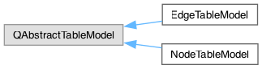
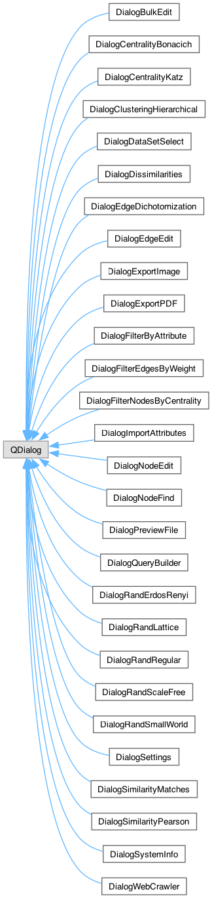
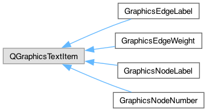

Code Documentation
3.7
Social Network Visualizer
Loading...
Searching...
No Matches
Class Hierarchy
Go to the textual class hierarchy



©
Social Network Visualizer
- All Rights Reserved - Generated by
1.16.1